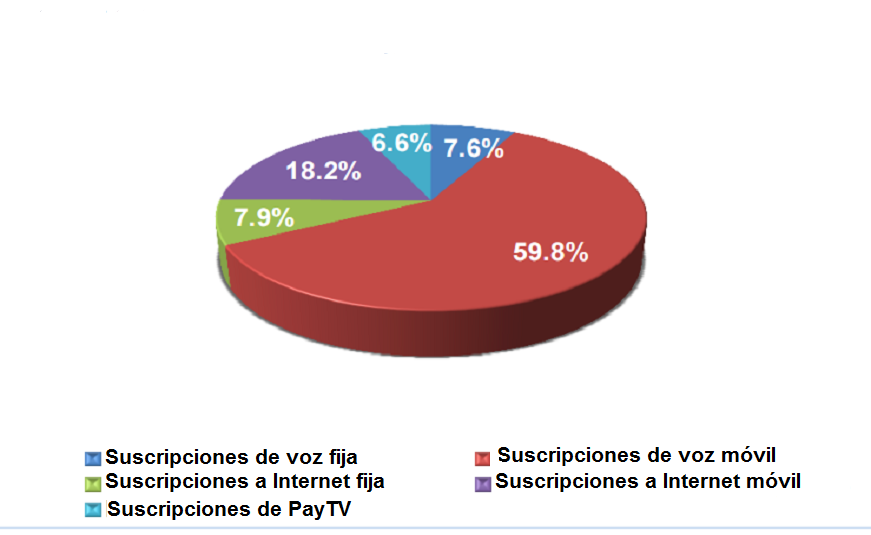
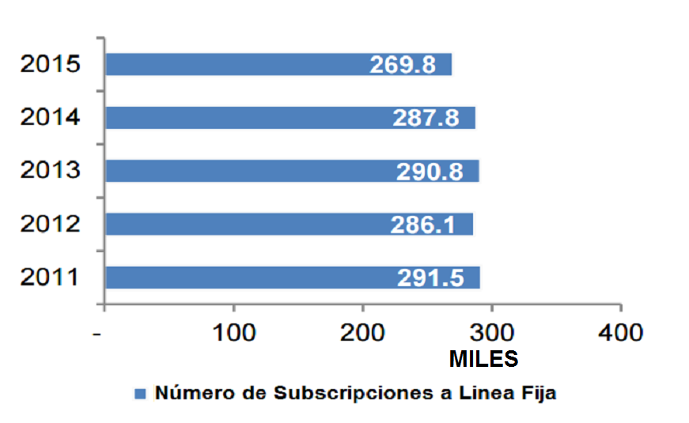
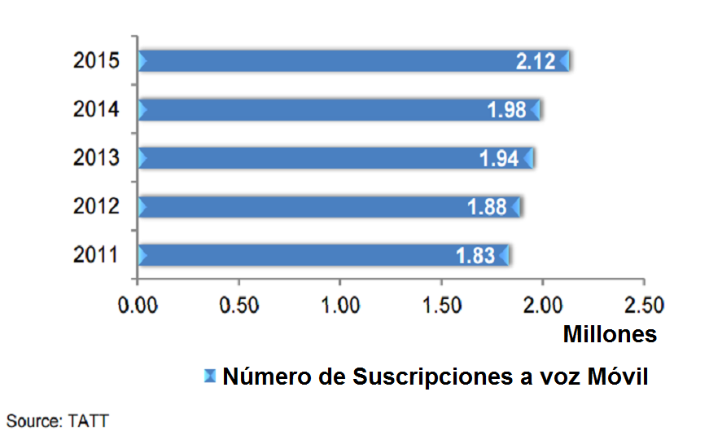
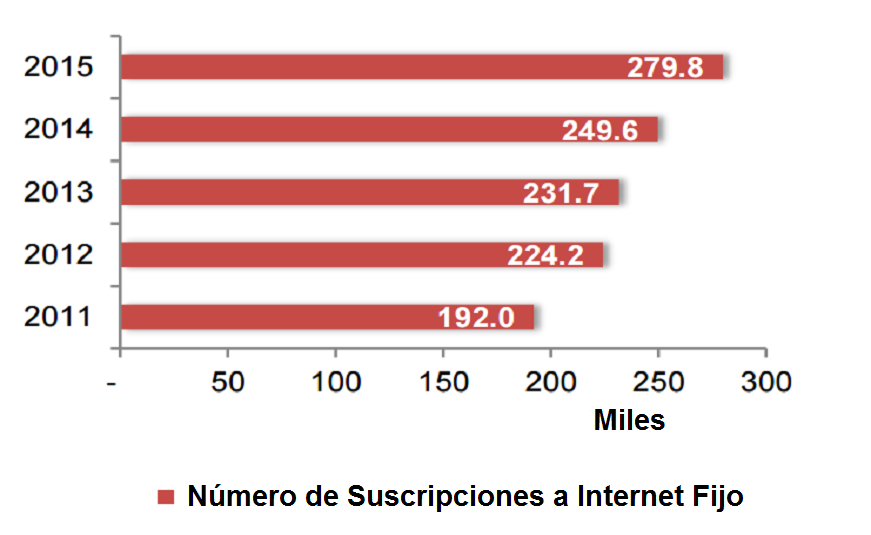

TRINIDAD Y TOBAGO
ESTADÍSTICAS
SUBSCRIPCIONES TOTALES DE LA INDUSTRIA POR SERVICIO SUSCRIPTORES A LINEA FIJA
 SUSCRIPCIONES DE VOZ MÓVIL SUSCRIPCIONES A INTERNET FIJO
 Fuente: Telecomunications Authority of Trinidad & Tobago (2011-2015)
ENTIDADES REGULADORAS